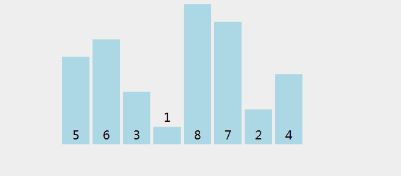
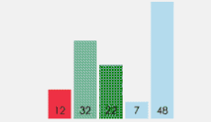
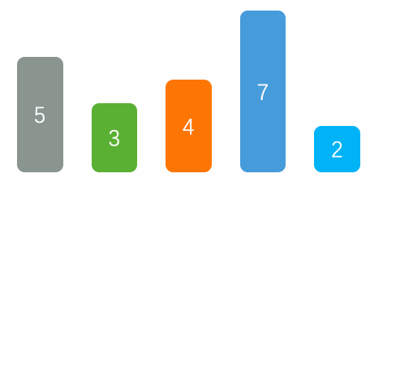

基本排序算法
冒泡排序(n**2)
进行n-1轮迭代，每次比较相邻的两个元素，如果前者大于后者，则交换顺序。因为直接在元素上进行操作，所以不会返回新的数组。其实就是每一轮冒泡，一个最大的元素就会通过比较相邻的元素，移到最右边。
你可以想象一个，10个小朋友站一排，身高并一，现在老师喊，从第一个小朋友开始，两两比较，
个子高的往右移（老师想让他们从低到高排序），第一轮就有一个小朋友最高的小朋友站到最右边，
第二轮次高的小朋友站倒数第二个位置，一直到最后一轮，一个小朋友不用比较，所以是n-1轮（9轮）

def bubble_sort(seq):
'''冒泡排序'''
n = len(seq)
for i in range(n-1):
for j in range(n-1-i):
if seq[j] > seq[j+1]:
seq[j], seq[j+1] = seq[j+1], seq[j]
def test_bubble_sort():
import random
seq = list(range(10))
random.shuffle(seq)
seq_sort = sorted(seq)
bubble_sort(seq)
assert seq_sort == seq
选择排序(n**2)
冒泡排序的思路是两两比较，较大的指移到了最后边，选择排序则是两两比较，选择一个最小的放在第一个位置，
再从剩下的元素中选择一个最小的放在第二个位置，一直到剩下的元素只有一个元素，也是n-1轮。
同样的，10个小朋友站成一排，第一轮从10个小朋友中选择一个最矮的放在第一个位置，第二轮从剩下的9个小朋友中，再选择一个最矮的放在第二个位置，一直到只剩下最后一个小朋友，直接站在最后一个位置，也是n-1轮。
和冒泡排序一样，也是两两交换。

def select_sort(seq):
'''选择排序'''
n = len(seq)
for i in range(n-1):
for j in range(i+1, n):
if seq[j] < seq[i]:
seq[i], seq[j] = seq[j], seq[i]
def test_select_sort():
import random
seq = list(range(10))
random.shuffle(seq)
seq_sort = sorted(seq)
select_sort(seq)
assert seq_sort == seq
插入排序(n**2)
如果有一个有序的序列，要求在这个已经排好序的序列中插入一个数，要求插入后仍然有序。因为是在有序的基础上再排序，利用了之前的有序条件，所以是稳定排序。
扑克牌摸牌，第一张摸到手里后，因为手里只有一张牌，认为是有序的，摸第二张的时候，这张牌和第一张比较，
没他大就交换位置，摸第三张牌的时候，和第二张牌比较，没他大就交换位置，否则一直找到比他小的，交换位
置。到最后一张牌也找到合适的位置后排好序了。

def insert_sort(seq):
n = len(seq)
for i in range(1, n):
target = seq[i]
pos = i - 1
while 0 <= pos and target < seq[pos]:
seq[pos+1] = seq[pos]
pos -= 1
seq[pos+1] = target
def test_insert_sort():
import random
seq = list(range(10))
random.shuffle(seq)
seq_sort = sorted(seq)
insert_sort(seq)
assert seq_sort == seq
希尔排序

1959年Shell发明，第一个突破O(n2)的排序算法，是简单插入排序的改进版。它与插入排序的不同之处在于，它会优先比较距离较远的元素。希尔排序又叫缩小增量排序。
希尔排序属于插入类排序,是将整个有序序列分割成若干小的子序列分别进行插入排序。
def shell_sort(seq):
n = len(seq)
interval = n // 2 # 不断缩小增量，每次是原来的一半
while 0 < interval < n:
# 里面是一个插入排序
for i in range(1, n):
target = seq[i]
pos = i - interval
while 0 <= pos and target < seq[pos]:
seq[pos+interval] = seq[pos]
pos -= interval
seq[pos+interval] = target
interval //= 2
def test_insert_sort():
import random
seq = list(range(10))
random.shuffle(seq)
seq_sort = sorted(seq)
shell_sort(seq)
assert seq_sort == seq